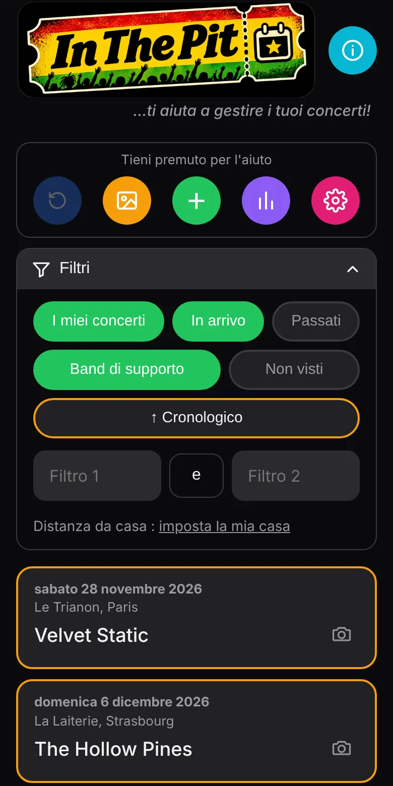
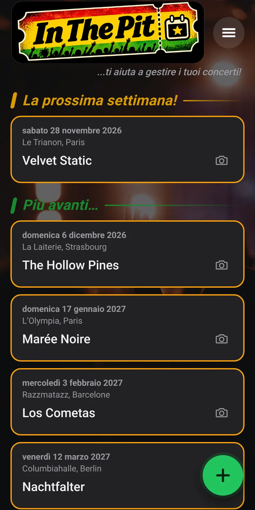
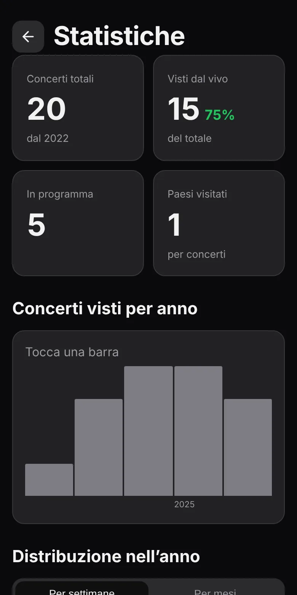

Il tuo diario dei concerti, biglietti inclusi.
In The Pit conserva ogni concerto a cui sei stato o andrai, con i biglietti, le foto e gli amici. Gratis, sul telefono.


I prossimi concerti, trovati per te
Ogni giorno In The Pit legge l’agenda dei locali frequentati dai suoi membri e aggiunge i concerti mancanti all’elenco pubblico. Li vedi accanto ai tuoi e basta un tocco per importarne uno nella tua lista.
- Gruppi di apertura, prezzo base e link alla pagina del concerto, con la dicitura rossa «Sold out» appena il locale lo annuncia.
- Una campanella in cima alla tua lista mostra cosa è stato aggiunto dalla tua ultima visita, prima i tuoi artisti preferiti. Scegli solo i preferiti o tutti gli artisti tranne la lista nera, e ricevili come notifica o via e-mail ogni giorno o ogni lunedì.
- Quando un locale annuncia l’apertura della biglietteria, il concerto lo indica. Per i tuoi artisti preferiti ricevi un promemoria la sera prima e 15 minuti prima dell’apertura.
- Scegli fin dove da casa tua: 10 km di default, fino a illimitato.
Niente PDF? Ne vale comunque la pena.
Caricare i biglietti è facoltativo. Senza un solo PDF, In The Pit ti offre già:
- tutta la tua storia di concerti, ognuno aggiunto in pochi secondi
- filtri, statistiche e i tuoi locali preferiti
- i concerti dei tuoi amici, e un avviso quando ne aggiungono
- promemoria prima di ogni concerto, e l’elenco pubblico dei concerti vicino a te
I tuoi biglietti, sotto chiave.
Se carichi un PDF, puoi crittografarlo sul tuo telefono prima che parta. Nessun altro può aprirlo, nemmeno noi.
Crittografia AES-256, eseguita sul tuo telefono. La frase segreta non lo lascia mai.
I biglietti pronti all’ingresso
Carica il PDF ricevuto. In The Pit legge artista, data, locale e prezzo al posto tuo. All’ingresso, un tocco apre uno schermo nero con il solo codice QR (o il codice a barre), grande e nitido. È preparato in anticipo: appare subito, anche senza segnale in sala. Il PDF resta a un’icona di distanza per il personale.
- Biglietto cartaceo? Fotografalo. Viene raddrizzato, ritagliato e salvato come immagine leggerissima.
- Aggiungi una nota alla foto. Gli amici la leggono tradotta nella loro lingua.
- Anche le tessere di abbonamento ai locali, con la loro schermata QR a un tocco dal biglietto. Biglietto comprato su DICE? Spunta «Biglietto DICE» e lo stesso pulsante apre l’app DICE.
2026-11-28VS-2611-A7K3-9X41-0058
Trova qualsiasi concerto in pochi secondi
Interruttori per i tuoi concerti, quelli degli amici, l’elenco pubblico, passati, futuri, gruppi spalla e non ancora visti. Ordine per data in entrambi i sensi e due parole chiave combinate con e / o.
- Un cursore tiene solo ciò che è vicino a casa, e la distanza compare su ogni concerto.
- I filtri vengono ricordati e un pulsante blu li azzera tutti.
- La ricerca trova anche gli amici, per nome o e-mail.
- Un cuore per gli artisti che ami, un divieto per quelli che non vuoi più vedere: spariscono dalla tua lista. Un filtro «Lista nera» li ritrova se cambi idea.
I concerti sono più belli con gli amici
Condividi la tua lista via e-mail. I concerti degli amici compaiono nella tua, con il loro nome, e puoi rinominarli come preferisci. Ricevi una notifica quando un amico aggiunge un concerto. All’apertura dell’app ti aspettano i concerti aggiunti dai tuoi amici dalla tua ultima visita.
- I tuoi abbonamenti restano privati. Solo foto e note dei vecchi biglietti sono mostrate agli amici.
- Condividi qualsiasi concerto in arrivo con un tocco: Facebook, WhatsApp o qualsiasi app del telefono, con il tuo messaggio e un’anteprima del concerto.
I tuoi concerti in numeri
Concerti per anno, artisti più visti, locali più frequentati, paesi e come si distribuisce il tuo anno per settimane o mesi. Tocca una barra per vedere i concerti che la compongono.

Non perdere il giorno giusto
Promemoria una settimana prima, la vigilia e il giorno stesso. Scegli quali. I concerti di oggi sono fissati in cima all’elenco dei prossimi.
E qualche piccola cosa
Cinque lingue
Inglese, francese, spagnolo, italiano e tedesco.
Sulla schermata iniziale
Aggiungila dal menu del browser. Nessuno store, nessun download.
Foto dei gruppi
Scegline una da Wikipedia o Deezer, o usa la tua.
Il tuo sfondo
Scegli l’immagine dietro la tua lista.
Anteprima ospite
Sfoglia l’elenco della comunità senza account.
Casella delle idee
Proponi cosa fare dopo. Arriva direttamente ai creatori.
Novità
Dopo un aggiornamento, vedi solo ciò che è cambiato dalla tua versione.
Funziona offline
La tua lista e i tuoi biglietti si aprono senza segnale, anche in fondo alla sala.
Meglio insieme
Ogni concerto aggiunto, da un membro o da In The Pit, entra in una lista comune, una sola volta per serata e in forma anonima. Più concerti aggiungono i membri, più si arricchisce per tutti.
I tuoi dati restano tuoi
Esporta tutto o elimina il tuo account con un tocco. Niente pubblicità, niente viene venduto.
Cassaforte dei biglietti facoltativa
Proteggi i tuoi biglietti PDF con una frase segreta che conosci solo tu. Sono crittografati sul tuo telefono: nessun altro può leggerli. Un biglietto più importante può persino avere la sua frase segreta.
Rimborso CRAL
Scegli un periodo: i biglietti dei concerti visti escono in un unico PDF con una pagina di riepilogo, pronto da inviare. I prezzi mancanti vengono letti sui biglietti.
Incolla un link, fatto
Hai trovato il concerto sul sito di un locale o di un festival? Incolla l’indirizzo della pagina: artista, data, locale e città si compilano da soli.
Racconta la serata
Di ritorno da un concerto? Scrivi qualche parola, aggiungi foto e brevi video: i tuoi amici ricevono una notifica e vedono il tuo racconto nell’app.
Provala senza account
L’app si apre direttamente sui concerti condivisi dai suoi membri. Crea un account dal menu quando vuoi tenere i tuoi.
Tutta la serata in un colpo
Headliner e gruppi d’apertura in un solo inserimento, la data in un tocco, la città ricavata dal locale: aggiungere un concerto richiede pochi secondi.
I tuoi generi
Ogni gruppo è collegato ai suoi generi e stili Discogs. Scegli quelli che ami e il filtro «I miei generi» tiene solo quelle serate.
Conti pubblici
Le spese dell’app e le donazioni ricevute sono pubblicate nell’app e su questo sito: tutti possono vedere se si regge.
Le agende dei locali, lette ogni giorno
Ogni giorno In The Pit legge l’agenda dei locali frequentati dai suoi utenti e aggiunge i concerti mancanti all’elenco pubblico, con gruppi di apertura, prezzo base e concerti sold out. Una notifica ti avvisa quando un nuovo concerto è in linea con i tuoi gusti.
Gratis, e resta gratis
In The Pit non costa nulla. Mantenerlo ha costi fissi, quindi se ti piace puoi contribuire su Ko-fi. Gli account sono approvati a mano: chiedi l’accesso con la tua e-mail e riceverai una risposta.
I conti, a carte scoperte
In The Pit non ha pubblicità e non vende alcun dato. Farlo funzionare costa comunque ogni mese. Ecco quanto costa e quanto portano le vostre donazioni, aggiornato in diretta.
In The Pit resterà gratuita finché le donazioni coprono le spese. Se a lungo andare non sarà così, l’app dovrà passare al freemium: l’essenziale resterebbe gratuito e alcune funzioni avanzate diventerebbero a pagamento. Ogni donazione allontana quel momento.
Il tempo speso per creare e far vivere l’app non è contato: è offerto.
Contribuisci su Ko-fiCaricamento dei numeri…
delle spese mensili coperte dalle donazioni
Gli ultimi 12 mesi
Domande
Devo caricare i miei biglietti?
No. Tutto funziona senza, tranne la schermata del biglietto: la tua lista, i filtri, le statistiche, gli amici, i promemoria e l’elenco pubblico. Se ne carichi uno, puoi crittografarlo con una frase segreta per tutti i biglietti o solo per quello.
Serve installare qualcosa?
No. Aprila nel browser. Se vuoi, aggiungila alla schermata iniziale dal menu del browser e si comporta come un’app.
Chi può vedere i miei concerti?
La tua lista, con note, prezzi, posti e biglietti, la vedi solo tu e gli amici con cui condividi. Il concerto in sé (artisti, data, locale) entra nella lista comune in forma anonima: nessuno può sapere chi l’ha aggiunto. Gli eventi privati restano privati.
Cosa fa con i miei biglietti?
Un’IA legge i biglietti PDF per compilare artista, data, locale e prezzo. Ha l’istruzione di ignorare nome, indirizzo e codici a barre. Il codice QR o a barre vero e proprio viene letto sul tuo telefono, non dall’IA. Legge anche le pagine dei concerti di cui incolli il link. I biglietti cartacei sono salvati come foto e sei tu a decidere cosa aggiungere.